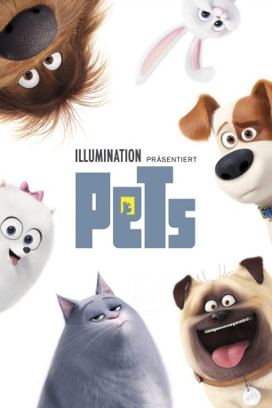

gesehen am 09.08.2017
gesehen am 09.08.2017Alternativ: The Secret Life of Pets gesehen am 09.08.2017
 
 IMDB-Wertung: 6.6 / 10
IMDB-Wertung: 6.6 / 10  Metascore:
Metascore: 
Was machen eigentlich unsere geliebten Haustiere, wenn wir nicht zuhause sind? Die nächste Zusammenarbeit zwischen Illumination Entertainment und Universal Pictures knüpft an die bisherigen Grosserfolge an (Despicable Me, Despicable Me 2) und erzählt vom geheimen Leben der Haustiere, wenn deren Herrchen ausser Haus sind.
Jahr: 2016
Dauer: 86 Minuten
FSK: 0
Land: Japan Studio: Universal PicturesTonspuren: DD5.1 - ,
Untertitel: Deutsch,
Auflösung: 1080p (1920x1040) Größe: 3829 MB
Genre: Komödie, Abenteuer, Animation/Trick, Familie
Regisseur: Chris Renaud, Yarrow Cheney
Drehbuch: Nikolai Gogol
Soundtrack:
Darsteller:
 Louis C.K. als Max
Louis C.K. als Max Eric Stonestreet als Duke
Eric Stonestreet als Duke Kevin Hart als Snowball
Kevin Hart als Snowball Jenny Slate als Gidget
Jenny Slate als Gidget Ellie Kemper als Katie
Ellie Kemper als Katie Albert Brooks als Tiberius
Albert Brooks als Tiberius Lake Bell als Chloe
Lake Bell als Chloe Dana Carvey als Pops
Dana Carvey als Pops Hannibal Buress als Buddy
Hannibal Buress als Buddy Bobby Moynihan als Mel
Bobby Moynihan als Mel Chris Renaud als Norman
Chris Renaud als Norman Steve Coogan als Ozone / Reginald
Steve Coogan als Ozone / Reginald Sandra Echeverría als Maria
Sandra Echeverría als Maria Bob Bergen als Additional Voices
Bob Bergen als Additional Voices Jason Marsden als Additional Voices
Jason Marsden als Additional Voices Jim Cummings als Additional Voices
Jim Cummings als Additional Voices Laraine Newman als Additional Voices
Laraine Newman als Additional Voices Bill Farmer als Additional Voices
Bill Farmer als Additional Voices Jess Harnell als Additional Voices
Jess Harnell als Additional Voices John Kassir als Additional Voices
John Kassir als Additional Voices Tara Strong als Additional Voices
Tara Strong als Additional Voices Jim Ward als Additional Voices
Jim Ward als Additional Voices Mona Marshall als Additional Voices
Mona Marshall als Additional Voices Brian T. Delaney als Additional Voices
Brian T. Delaney als Additional Voices Jan Rabson als Additional Voices
Jan Rabson als Additional VoicesDatei: X:\Kinder Collections\Pets\Pets (2016, FSK0, 1920x1040).mkv seit 08.11.2016
Festplatte: Kinder-Filme+Trick
 Es gibt insgesamt 7 Filme in der Gruppe 'Kinder Collections\Pets'
Es gibt insgesamt 7 Filme in der Gruppe 'Kinder Collections\Pets'